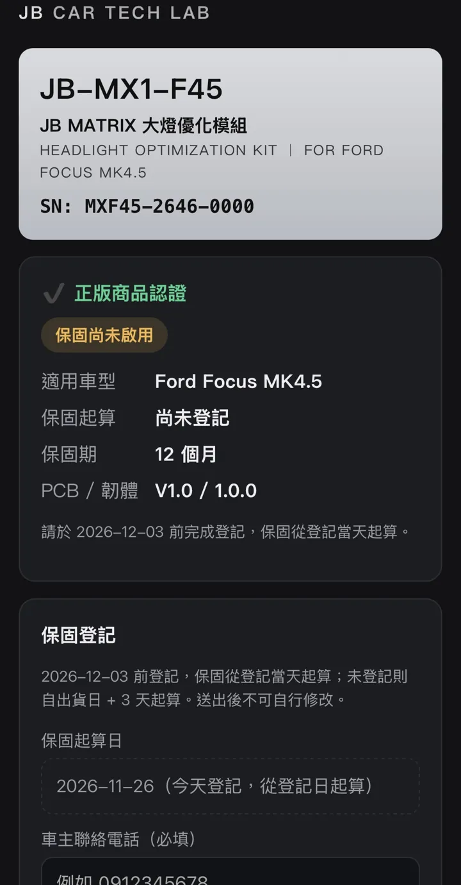
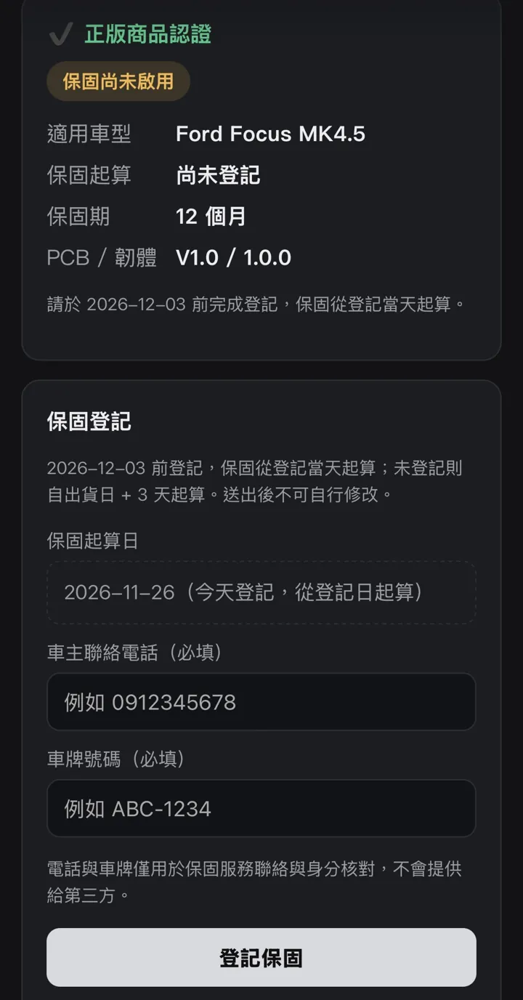
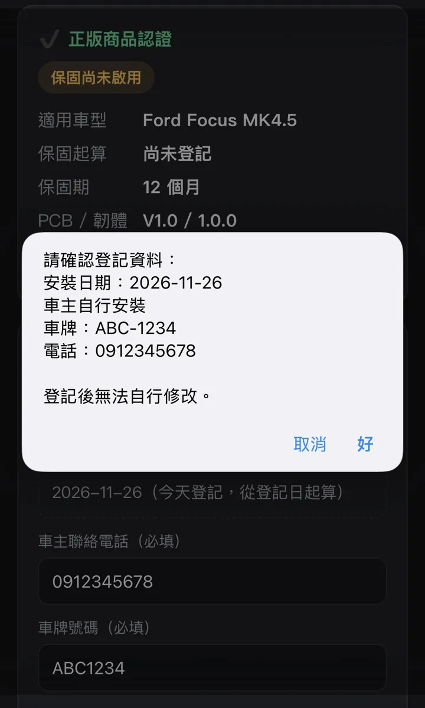
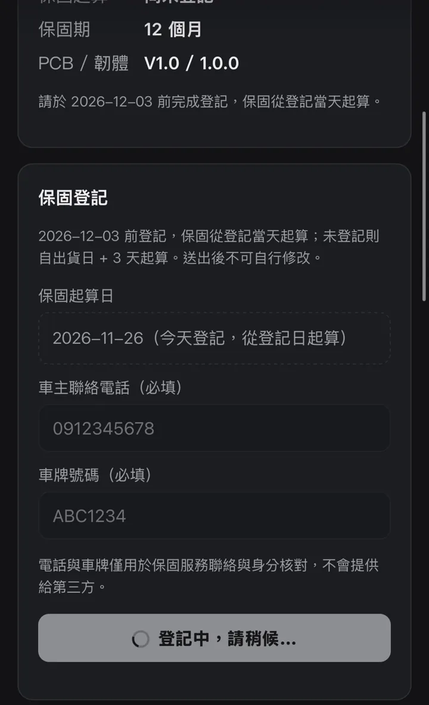
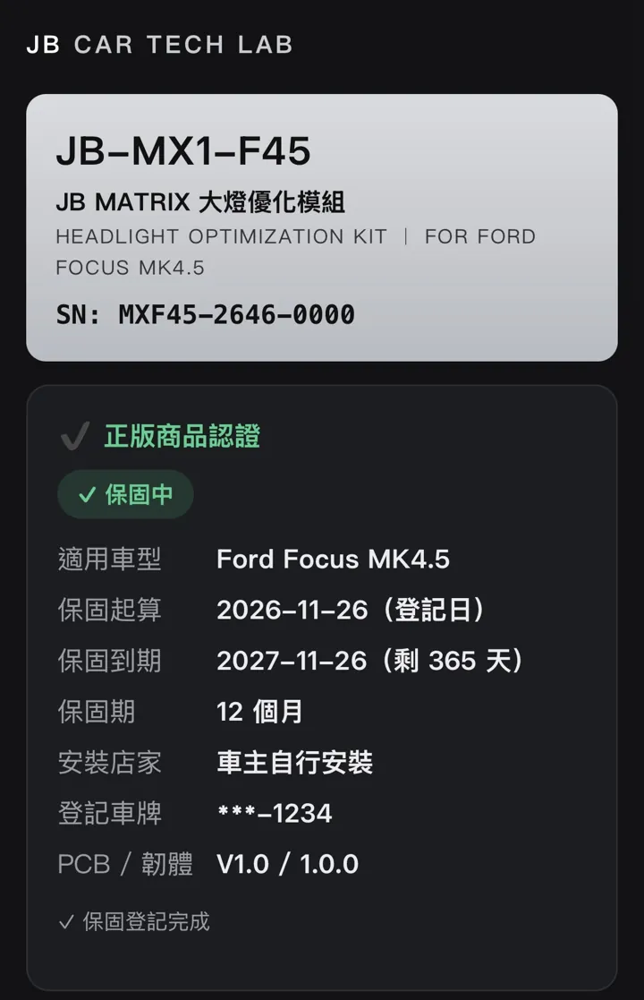

WARRANTY REGISTRATION
JB MATRIX 保固登記教學
大燈優化模組 ・ Ford Focus MK4.5
保固12 個月
需要時間約 1 分鐘
要填電話＋車牌
✅
請在安裝前先登記。模組裝上後，QR Code 貼紙會在手套箱後方，不方便掃描。
保固從哪天開始算？
出貨後 7 天內登記從登記當天起算
超過 7 天或沒有登記從出貨日 + 3 天起算
送出後不可自行修改，請確認資料正確再送出。
登記步驟
-
掃描 QR Code
用手機相機掃模組貼紙上的 QR Code，會自動打開保固頁。
-
確認產品資訊
畫面顯示「✔ 正版商品認證」和序號（SN）。還沒登記時標籤是黃色「保固尚未啟用」，下方會寫明登記期限。

-
往下捲到「保固登記」並填寫
保固起算日會自動帶入今天，不用填。只需填兩欄：
- 車主聯絡電話：只打數字，例如 0912345678
- 車牌號碼：例如 ABC1234，沒打「-」會自動補上

-
按「登記保固」並確認
跳出確認視窗，核對安裝日期、車牌、電話無誤後按「好」。填錯請按「取消」修改。

-
等待幾秒
按鈕變成「登記中，請稍候…」，請勿重複按或關閉頁面。

-
登記完成
標籤變成綠色「✓ 保固中」，並顯示保固起算日（登記日）、到期日與「✓ 保固登記完成」。建議截圖留存。

🔎
裝上後不用再掃 QR Code：以後要查保固，到官網「已登記車主查詢」輸入登記的電話與車牌即可。
常見問題
掃 QR Code 顯示「查無此序號」？
請拍下貼紙照片，傳給 LINE 客服。
登記資料填錯了？
送出後無法自行修改，請將序號與正確資料傳給 LINE 客服更正。
已經裝上去才想到要登記？
拆下手套箱下護板後用手機掃貼紙，或把序號傳給 LINE 客服協助。
超過 7 天才登記？
一樣可以登記，保固從出貨日 + 3 天起算。